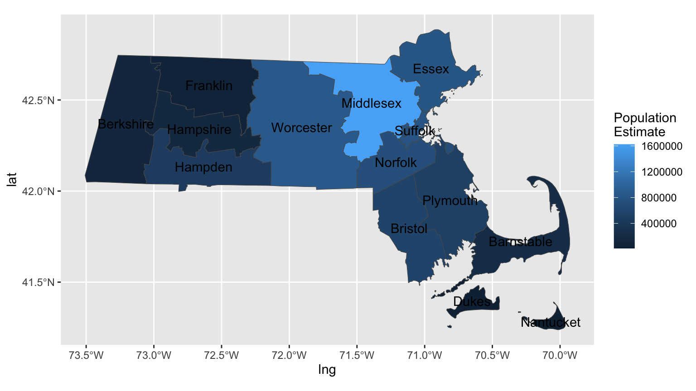
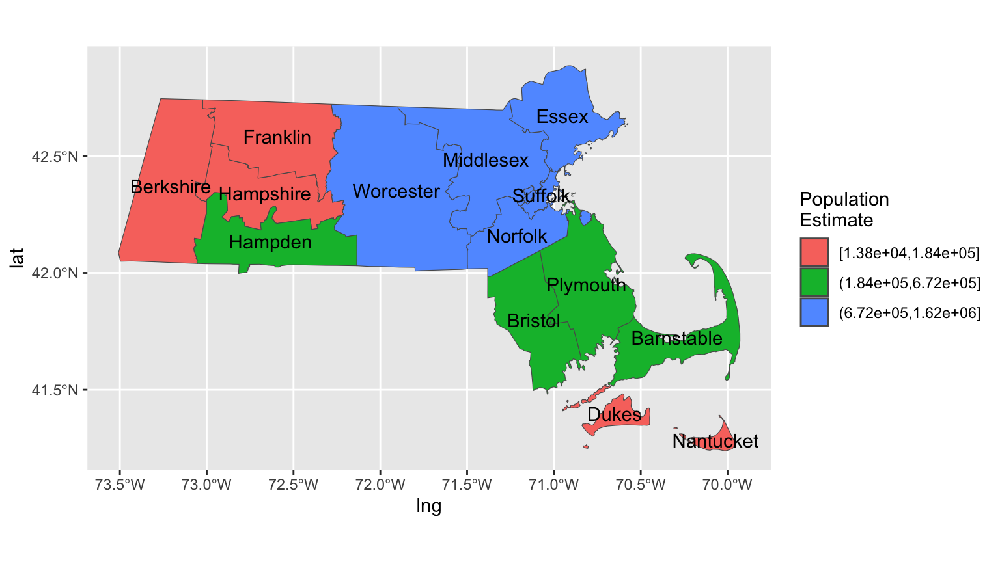

# Get MA county sf object, that includes population estimate column in data
mass_pop_orig <-
tidycensus::get_acs(
geography = "county",
variables = "B01003_001",
state = "MA",
geometry = TRUE
) |>
# Add centroids to each region using purrr package
mutate(
lng = purrr::map_dbl(geometry, ~st_centroid(.x)[[1]]),
lat = purrr::map_dbl(geometry, ~st_centroid(.x)[[2]])
)
|
| | 0%
|
| | 1%
|
|= | 1%
|
|= | 2%
|
|== | 2%
|
|== | 3%
|
|=== | 4%
|
|=== | 5%
|
|==== | 5%
|
|==== | 6%
|
|===== | 6%
|
|===== | 7%
|
|====== | 8%
|
|====== | 9%
|
|======= | 9%
|
|======= | 10%
|
|======== | 11%
|
|======== | 12%
|
|========= | 12%
|
|========= | 13%
|
|========= | 14%
|
|========== | 14%
|
|========== | 15%
|
|=========== | 15%
|
|=========== | 16%
|
|============ | 17%
|
|============ | 18%
|
|============= | 18%
|
|============= | 19%
|
|============== | 19%
|
|============== | 20%
|
|============== | 21%
|
|=============== | 21%
|
|=============== | 22%
|
|================ | 22%
|
|================ | 23%
|
|================= | 24%
|
|================= | 25%
|
|================== | 25%
|
|================== | 26%
|
|=================== | 27%
|
|=================== | 28%
|
|==================== | 28%
|
|==================== | 29%
|
|===================== | 30%
|
|===================== | 31%
|
|====================== | 31%
|
|====================== | 32%
|
|================================ | 46%
|
|===================================== | 54%
|
|====================================== | 54%
|
|====================================== | 55%
|
|======================================= | 55%
|
|======================================= | 56%
|
|======================================== | 57%
|
|======================================== | 58%
|
|========================================= | 58%
|
|========================================= | 59%
|
|========================================== | 59%
|
|========================================== | 60%
|
|========================================== | 61%
|
|=========================================== | 61%
|
|============================================== | 66%
|
|================================================ | 68%
|
|================================================ | 69%
|
|=================================================== | 73%
|
|==================================================== | 75%
|
|============================================================== | 89%
|
|================================================================== | 94%
|
|================================================================== | 95%
|
|=================================================================== | 95%
|
|=================================================================== | 96%
|
|==================================================================== | 97%
|
|==================================================================== | 98%
|
|===================================================================== | 98%
|
|===================================================================== | 99%
|
|======================================================================| 100%mass_pop_origSimple feature collection with 14 features and 7 fields
Geometry type: MULTIPOLYGON
Dimension: XY
Bounding box: xmin: -73.50814 ymin: 41.23796 xmax: -69.92839 ymax: 42.88659
Geodetic CRS: NAD83
First 10 features:
GEOID NAME variable estimate moe
1 25017 Middlesex County, Massachusetts B01003_001 1623411 NA
2 25005 Bristol County, Massachusetts B01003_001 576070 NA
3 25015 Hampshire County, Massachusetts B01003_001 161810 NA
4 25025 Suffolk County, Massachusetts B01003_001 792647 NA
5 25023 Plymouth County, Massachusetts B01003_001 527602 NA
6 25027 Worcester County, Massachusetts B01003_001 856858 NA
7 25009 Essex County, Massachusetts B01003_001 804598 NA
8 25001 Barnstable County, Massachusetts B01003_001 227942 NA
9 25013 Hampden County, Massachusetts B01003_001 466265 NA
10 25021 Norfolk County, Massachusetts B01003_001 720403 NA
geometry lng lat
1 MULTIPOLYGON (((-71.89877 4... -71.39180 42.48557
2 MULTIPOLYGON (((-70.83595 4... -71.11438 41.79716
3 MULTIPOLYGON (((-73.06577 4... -72.66377 42.34016
4 MULTIPOLYGON (((-70.93091 4... -71.07185 42.33335
5 MULTIPOLYGON (((-70.88335 4... -70.81141 41.95116
6 MULTIPOLYGON (((-72.31363 4... -71.90773 42.35142
7 MULTIPOLYGON (((-70.58029 4... -70.95198 42.67319
8 MULTIPOLYGON (((-70.68698 4... -70.29036 41.72436
9 MULTIPOLYGON (((-73.07484 4... -72.63158 42.13509
10 MULTIPOLYGON (((-70.84466 4... -71.21147 42.16048# Unfortunately the original NAME variable above is very long and redundant.
# Create a new data frame with the just the county name using the separate()
# function from the tidyr package.
mass_pop <- mass_pop_orig |>
tidyr::separate(NAME, c("County", "State"), sep = ", ") |>
tidyr::separate(County, c("County", "Fluff"), sep = " ")
# Plot gradient choropleth map based on numerical variable estimate
ggplot() +
geom_sf(data = mass_pop, aes(fill = estimate)) +
geom_text(data = mass_pop, aes(x = lng, y = lat, label = County)) +
labs(fill = "Population\nEstimate")
# What if instead we want a bin based choropleth map. Use the cut_number()
# function to convert the numerical variable estimate
# to a categorical variable with 3 levels!
mass_pop <- mass_pop |>
mutate(estimate_discrete = cut_number(estimate, 3))
mass_popSimple feature collection with 14 features and 10 fields
Geometry type: MULTIPOLYGON
Dimension: XY
Bounding box: xmin: -73.50814 ymin: 41.23796 xmax: -69.92839 ymax: 42.88659
Geodetic CRS: NAD83
First 10 features:
GEOID County Fluff State variable estimate moe lng
1 25017 Middlesex County Massachusetts B01003_001 1623411 NA -71.39180
2 25005 Bristol County Massachusetts B01003_001 576070 NA -71.11438
3 25015 Hampshire County Massachusetts B01003_001 161810 NA -72.66377
4 25025 Suffolk County Massachusetts B01003_001 792647 NA -71.07185
5 25023 Plymouth County Massachusetts B01003_001 527602 NA -70.81141
6 25027 Worcester County Massachusetts B01003_001 856858 NA -71.90773
7 25009 Essex County Massachusetts B01003_001 804598 NA -70.95198
8 25001 Barnstable County Massachusetts B01003_001 227942 NA -70.29036
9 25013 Hampden County Massachusetts B01003_001 466265 NA -72.63158
10 25021 Norfolk County Massachusetts B01003_001 720403 NA -71.21147
lat geometry estimate_discrete
1 42.48557 MULTIPOLYGON (((-71.89877 4... (6.72e+05,1.62e+06]
2 41.79716 MULTIPOLYGON (((-70.83595 4... (1.84e+05,6.72e+05]
3 42.34016 MULTIPOLYGON (((-73.06577 4... [1.38e+04,1.84e+05]
4 42.33335 MULTIPOLYGON (((-70.93091 4... (6.72e+05,1.62e+06]
5 41.95116 MULTIPOLYGON (((-70.88335 4... (1.84e+05,6.72e+05]
6 42.35142 MULTIPOLYGON (((-72.31363 4... (6.72e+05,1.62e+06]
7 42.67319 MULTIPOLYGON (((-70.58029 4... (6.72e+05,1.62e+06]
8 41.72436 MULTIPOLYGON (((-70.68698 4... (1.84e+05,6.72e+05]
9 42.13509 MULTIPOLYGON (((-73.07484 4... (1.84e+05,6.72e+05]
10 42.16048 MULTIPOLYGON (((-70.84466 4... (6.72e+05,1.62e+06]# Plot!
ggplot() +
geom_sf(data = mass_pop, aes(fill = estimate_discrete)) +
geom_text(data = mass_pop, aes(x = lng, y = lat, label = County)) +
labs(fill = "Population\nEstimate")